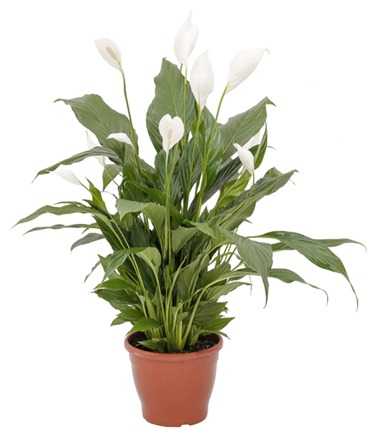
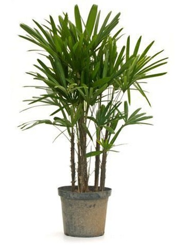

Nome popular (vulgar): Palmeira-fênix, Palmeira-anã, Tamareira-anã, Tamareira-de-jardim
Nome científico: Phoenix roebelenii
Família: Arecaceae
Categoria: Palmeiras
Clima: Equatorial, Oceânico, Subtropical, Tropical
Origem: Tailândia, Vietnã
Altura: 1.2 a 1.8 metros, 1.8 a 2.4 metros, 2.4 a 3.0 metros, 3.0 a 3.6 metros
Luminosidade: Meia Sombra, Sol Pleno
Ciclo de Vida: Perene
2. Lírio (Spathiphyllum wallisii)

Nome popular (vulgar): Lírio da paz, Bandeira-branca, Espatifilo
Nome científico: Spathiphyllum wallisii
Família: Araceae
Categoria: Flores Perenes, Forrações à Meia Sombra
Clima: Equatorial, Subtropical, Tropical
Origem: América Central e do Sul (Colômbia e Venezuela)
Altura: 0.4 a 0.6 metros
Luminosidade: Luz Difusa, Meia Sombra
Ciclo de Vida: Perene
3. areca ( Dypsis lutescens)
Nome popular (vulgar):: Areca, Areca-bambu, coqueiro de jardim
Nome científico: Dypsis lutescens
Família: Arecaceae
Categoria: Arbustos, Arbustos Tropicais, Palmeiras
Clima: Equatorial, Subtropical, Tropical
Origem: África, Madagascar
Altura: 3.0 a 9.0 metros
Luminosidade: Meia Sombra, Sol Pleno
Ciclo de Vida: Perene
4. Jiboia (Epipremnum pinnatum)
Nome popular (vulgar): Jiboia, jiboia limão, jiboia amarela;
Nome Científico: Epipremnum pinnatum;
Família: Araceae;
Categoria: Folhagens, Forrações à Meia Sombra, Trepadeiras;
Clima: Equatorial, Oceânico, Subtropical, Tropical;
Origem: Ilhas Salomão, Oceania;
Altura: 1,2 a 1,8 metros;
Luminosidade: Luz Difusa, Meia Sombra, Sol Pleno;
Ciclo de Vida: Perene.
5. Jiboia-verde (Epipremnum pinnatum)
Nome popular (vulgar): Jibóia-verde
Nome científico: Epipremnum pinnatum (L.) Engl.
Família: Araceae
Porte (Hábito): Liana, pode atingir 12 metros de altura a depender do suporte
Local no Jardim: Canteiros sombreados
Origem: Ilhas Salomão (Oceania)
Época de florescimento: Verão e Outono
Polinização: Entomofilia (insetos)
Características: Trepadeira de grande porte, com folhas vistosas, brilhantes e espessas que se alteram de acordo com a maturidade da planta, inicialmente são pequenas, uniformemente verdes e lanceoladas (com forma de ponta de lança), como desenvolvimento da planta as folhas passam a ser mais ovaladas, com manchas amarelas distribuídas aleatoriamente e recortadas, podendo alcançar 1 metro de comprimento e 45 cm de largura. Dificilmente florescem no Brasil, sendo sua multiplicação realizada artificialmente por estaquia.
6. Antúrio (Anthurium andraeanum)
Nome popular (vulgar): Antúrio
Nome científico: Anthurium andraeanum
Família: Araceae
Clima: Equatorial, Subtropical, Tropical
Origem: América do Sul, Colômbia
Altura: 0.3 a 0.6 metros
Luminosidade: Luz Difusa, Meia Sombra
Ciclo de Vida: Perene
7. Rafis ( Rhapis excelsa)

Nome popular (vulgar): Ráfis, palmeira-rápis, palmeira-ráfia, rápis, palmeira-dama, jupati.
Nome científico: Rhapis excelsa (Thunb.) Henry
Família: Arecaceae
Origem: China, Ásia
Altura média: 1.3 - 3m
Características morfológicas: Caules múltiplos, revestidos por remanescentes das folhas já caídas e por tecido fibroso marrom-pardacento que se removido revela o verde, antes camuflado, com nós e entre-nós a semelhança de bambu, formam touceiras densas de 1,5-3 m de altura e com cerca de 3 cm de diâmetro. Folhas palmadas, divididas até a base em 5-9 segmentos irregulares. Inflorescência interfoliar, com flores masculinas e femininas em plantas separadas. Frutos ovoides, pequenos, brancos quando maduros.
Cultivo: Deve ser cultivada sob sol pleno, meia-sombra, sombra ou luz difusa, em solo fértil e bem drenável, irrigado regularmente. A palmeira-rápis aprecia a umidade, mas não tolera o encharcamento. Regas regulares em substratos muito bem drenados são ideais para o seu cultivo em climas quentes. Leves adubações anuais são o suficiente para plantas cultivadas em ambientes internos. Não tolera geadas, ambientes secos ou com ar condicionado por tempo prolongado. Aprecia o clima ameno. Multiplica-se por sementes e divisão das touceiras.
Ciclo de vida: Perene
8. Gravatinha (Chlorophytum comosum)
Nome popular (vulgar): Gravatinha, clorofito.
Nome científico: Chlorophytum comosum
Família: Agavaceae
Clima: Equatorial, Mediterrâneo, Subtropical, Tropical
Origem: África, África do Sul
Altura: 0.3 a 0.6 metros
Luminosidade: Meia Sombra, Sol Pleno
Ciclo de Vida: Perene
9. Palmeira imperial(Roystonea oleracea)
Nome popular (vulgar): Palmeira Imperial, Palmeira Real
Nome científico: Roystonea oleracea (Jacq.) O.F. Cook
Família: Arecaceae
Origem: Caribe, norte da Venezuela e nordeste da Colômbia
Altura média: 30m
Características morfológicas: Palmeira solitária, robusta, estipe colunar, liso, de cor esbranquiçada, medindo de 18-40m de altura e provida de palmito de mais de 2m de comprimento. Folhas pinadas de 2-5,6 m de comprimento. Cada folha é composta por numerosos e estreitos folíolos, que chegam a medir 65-94 cm de comprimento por 3-5 cm de largura cada. Flores brancas e pequenas, reunidas em cachos distribuídos abaixo do palmito, e cuja haste central mede cerca de 1,5m de comprimento e a haste de sustentação 46-53 cm de comprimento. Fruto elíptico, de 1-2 cm de comprimento, arroxeado, dotado de fina casca, polpa carnuda e uma única semente. Semente elíptica, de cor verde-amarelada.
Cultivo: Multiplica-se por sementes que germinam em cerca de 70 dias.
Período de florescimento e frutificação: Florescimento no período primavera e frutifica no verão.
Utilidades econômicas: Árvore de grande efeito paisagístico; é símbolo aristocrático na literatura nacional.
Característica interessantes: No Brasil, primeiro indivíduo foi plantado pelo Príncipe Regente Dom João VI, depois Rei, no Jardim Botânico do Rio de Janeiro.
Nome popular (vulgar): Palmeira-real, Palmeira-australiana, Palmeira-real-da-austrália, Palmeira-seafórtia.
Nome científico: Archontophoenix cunninghamiana
Família: Arecaceae
Clima: Equatorial, Subtropical, Tropical
Origem: Austrália, Oceania
Altura: de 15 a 20 metros
Ciclo de Vida: Perene
Características morfológicas: estipe geralmente é único, anelado com cerca de 20 cm de diâmetro. As folhas são pinadas, longas, com ráquis curvada e folíolos lanceolados, rígidos, acuminados e verdes. O palmito é longo e visível, recoberto pelas bainhas foliares, de cor verde clara. A inflorescência surge logo abaixo do palmito e tem cerca de 1 m de comprimento. Ela é do tipo espádice, pendente, divida em numerosas espigas com ramificações fortes e uma espata esverdeada que se desprende da planta com o amadurecimento das flores. As flores são brancas a violáceas e atraem abelhas, principalmente arapuás. Os frutos são drupas esféricas e vermelhas, atrativas para aves.
5. Jiboia-verde (Epipremnum pinnatum)
Nome popular (vulgar): : Ipê Rosa de El Salvador
Nome científico: Handroanthus pentaphylla
Família: Bignoniaceae
altura media: 12 a 20 m
Porte (Hábito): Liana, pode atingir 12 metros de altura a depender do suporte
Local no Jardim: Canteiros sombreados
Origem: América Central, algumas ilhas do Caribe e América do Sul tropical.
Época de florescimento: Verão e Outono
Polinização: Entomofilia (insetos)
Características: Árvore semicaducifólia exótica muito aclimatada no Brasil. Confundida com outros ipês – especialmente com a Tabebuia impetiginosa – cujas floradas apresentam tonalidades similares, diferencia-se pela copa densa, formada por folhas compostas digitadas, de pecíolos longos, opostas, com cinco folíolos verde-escuros, coriáceos e rígidos, sendo o central maior, de ápice alongado, de 18 a 25 centímetros de comprimento e porque floresce, geralmente, com a árvore vestida de folhas. Prefere clima quente, livre de geadas, suportando longas estiagem, nas regiões serranas, que favorecem florações mais intensas.
Caros apoiadores,
Junte-se a nós na missão de tornar nossa cidade mais verde e sustentável por meio da arborização urbana. Com sua contribuição financeira, poderemos adquirir e cuidar das árvores, trazendo benefícios ambientais e melhorando a qualidade de vida. Contamos com seu apoio para construir um futuro mais verde e saudável para todos.
Agradecemos sua generosidade.
Atenciosamente,
Fatec Arthur de Azevedo